ชุดสายพราน
ชุดสายพรานทั้งหมด 20 ชุด
| ชุด | Lv | ครบ 3 ชิ้น |
|---|---|---|
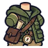 ชุดนักเดินทางป่า | 1 | HIT +10 · DEX +2 |
| ชุดกันฝนกบ | 8 | HIT +10 · DEX +2 |
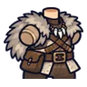 ชุดพรานหมาป่า | 14 | HIT +10 · DEX +2 |
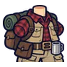 ชุดแคมป์ปิ้ง | 18 | HIT +10 · DEX +2 |
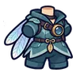 ชุดแมลงปอ | 22 | HIT +10 · DEX +2 |
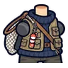 ชุดชาวประมง | 26 | HIT +20 · DEX +4 |
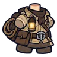 ชุดนักสำรวจเหมือง | 32 | HIT +20 · DEX +4 |
| ชุดนักเก็บสมุนไพร | 38 | HIT +20 · DEX +4 |
| ชุดบุรุษไปรษณีย์ป่า | 42 | HIT +20 · DEX +4 |
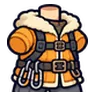 ชุดนักปีนเขา | 46 | HIT +20 · DEX +4 |
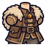 ชุดพรานกวางเอลก์ | 51 | HIT +30 · DEX +6 |
| ชุดเรนเจอร์ป่าลึก | 56 | HIT +30 · DEX +6 |
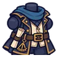 ชุดนักเดินเรือดาว | 62 | HIT +30 · DEX +6 |
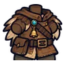 ชุดผู้ฝึกเหยี่ยว | 66 | HIT +30 · DEX +6 |
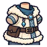 ชุดนักสำรวจขั้วโลก | 70 | HIT +30 · DEX +6 |
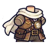 ชุดนักบินฟากฟ้า | 76 | HIT +40 · DEX +8 |
| ชุดพรานในตำนาน | 80 | HIT +40 · DEX +8 |
| ชุดนักเดินทางใต้แสงจันทร์ | 86 | HIT +40 · DEX +8 |
| ชุดราชาแคมป์ | 90 | HIT +40 · DEX +8 |
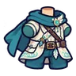 ชุดผู้เดินตามลม | 95 | HIT +40 · DEX +8 |